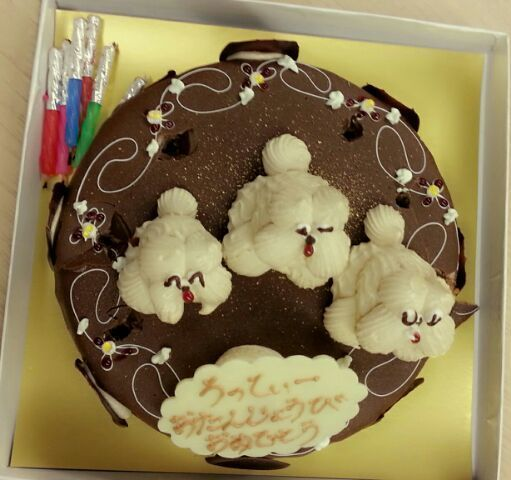

はろんはろん (・ω・)
Rotty☆だよん.
皆さん、たぁ〜〜〜っくさんの
誕生日コメントありがとうございます。
とぉ〜〜〜〜っても、てもても
嬉ちかったよ (´∨`)
隅から隅まで読んだからね／
後、前回のblogに出てきた
ひろなは そうだよん、
9nineのひろなで
ルリは 最近
happinessのボーカルに加入したルリ☆
また遊ぼーねー (^ω^)
スタッフさんがまひろに
用意してくれた誕生日ケーキ(〃∨〃)
見て... めちゃめちゃ可愛いのっ♪
・ ・ ・ ・ ・ ・

サスケが３匹ものってる いやん.
可愛いんだからまったく )))
周りのデザインも素敵。きらん
しかも チョコレートっ♪
本当に嬉しちかったな(〃∨〃)
一瞬でなくなったよ わら
あっ、NOGIBINGO見てくれたかな？？
毎週 火曜日です＼(^^)／
是非見てねん ♪
なんだか お気に入りの写メです\(^-^)/
今日はこの5人で
お揃いのパンツで
明日お台場合衆国のリハを
やってまいりました☆
ばいちろりん♪
Rotty のし